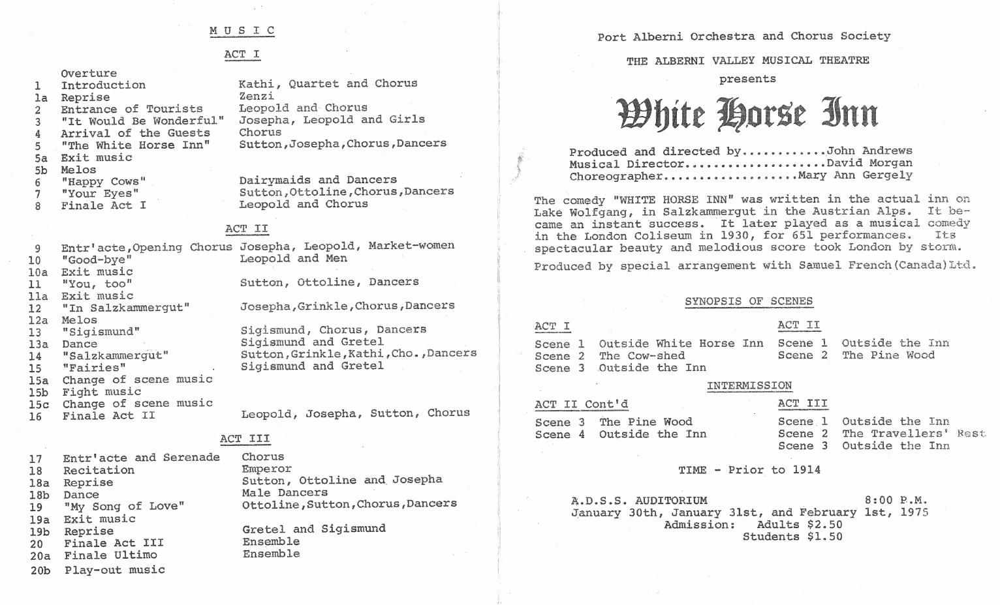
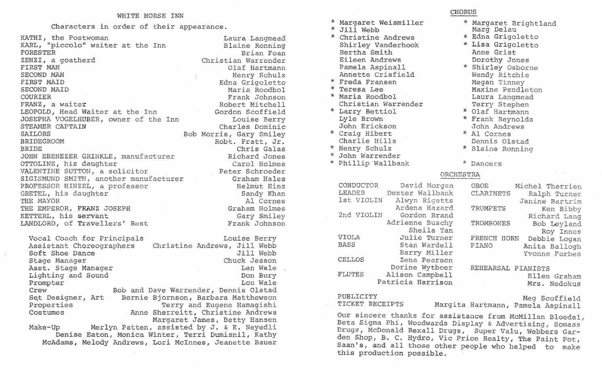

Unpublished working page. Not linked from the site and hidden from search engines. Kept for the future Alberni Valley Musical Theatre history section.
Alberni Valley Musical Theatre: archive
White Horse Inn, 1975
The Alberni Valley Musical Theatre (with the Port Alberni Orchestra and Chorus Society) presents White Horse Inn · produced and directed by John Andrews · musical director David Morgan · choreographer Mary Ann Gergely · A.D.S.S. Auditorium, 8:00 pm, January 30, 31 and February 1, 1975 · adults $2.50, students $1.50.

